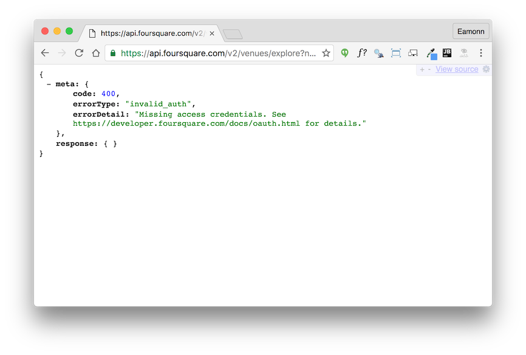

Foursquare API in Node
Connect to foursquare API and retrieve list of venues based on a simple location and venue keyboard. Log the venues to the console. Use an npm package to access the api.
Setup
Sign up for a developer account :
Visit:
Create an app - and once created locate these items. In the new app use any public urls for the moment.
Locate these parameters:
client_id: 'Your ID',
client_secret: 'Your Secret'... and take note of them.
Create Project
Create a new 'Empty Project' in WebStorm called js-ajax-2.
Bring in the .jscsrc file from th previous labs, and make sure the inspections are enabled.
Create a new file called fs.js with the following:
var fsConfig = {
base_url: 'https://api.foursquare.com/v2/venues/explore?',
client_id: 'Your ID',
client_secret: 'Your Secret',
};
console.log (fsConfig);Run the program now by selecting the js file, right click and select Run
Run it again by pressing the green arrow on the toolbar.
Set a breakpoint on the console.log statement - and press the green 'bug' icon. The program should stop and you should be able to inspect the fsConfig object.
Checkins
Visit:
And press 'Seatch' on the waterford Location (leave the other field blank).
Now try this:
In a any text editor, perhaps sublime, insert the following:
https://api.foursquare.com/v2/venues/explore?near=Waterford,IE&query=&v=20140601Now copy and paste this into the address bar of a browser and see what is returned. Should be something like this:

In the edtior, modify the urls to contain the id + secret you noted from the foursquare developer account:
https://api.foursquare.com/v2/venues/explore?near=Waterford,IE&query=&client_id=YOUR_ID&client_secret=YOUR_SECRET&v=20140601Now transfer the url to an browser and you should see results:

This has been rendered with this chrome plugin:
Which you may already have installed.
Query in Javascript
Extend your programming with the following:
var fsCredentials = '&client_id=' + fsConfig.client_id + '&client_secret=' + fsConfig.client_secret + '&v=20140601';
console.log(fsConfig.base_url + 'near=Waterford,IE' + fsCredentials);Now run the program, and the url we manually generated in the last step will be printed to the console:

From within the webstorm log you should be able to click on the link and download the list of venues.
Now we will do this programatically. Insert the following as the first line in fs.js:
var request = require('request');Run a shell, and navigate to the project folder. Enter the following:
npm install requestYou should see something like this:
$ npm install request
request@2.69.0 node_modules/request
├── aws-sign2@0.6.0
├── forever-agent@0.6.1
├── caseless@0.11.0
├── tunnel-agent@0.4.2
├── oauth-sign@0.8.1
├── is-typedarray@1.0.0
├── isstream@0.1.2
├── stringstream@0.0.5
├── json-stringify-safe@5.0.1
├── extend@3.0.0
├── tough-cookie@2.2.1
├── node-uuid@1.4.7
├── qs@6.0.2
├── combined-stream@1.0.5 (delayed-stream@1.0.0)
├── mime-types@2.1.10 (mime-db@1.22.0)
├── form-data@1.0.0-rc3 (async@1.5.2)
├── hawk@3.1.3 (cryptiles@2.0.5, boom@2.10.1, sntp@1.0.9, hoek@2.16.3)
├── aws4@1.3.2 (lru-cache@4.0.0)
├── bl@1.0.3 (readable-stream@2.0.5)
├── http-signature@1.1.1 (assert-plus@0.2.0, jsprim@1.2.2, sshpk@1.7.4)
└── har-validator@2.0.6 (commander@2.9.0, pinkie-promise@2.0.0, chalk@1.1.1, is-my-json-valid@2.13.1)Now insert the following at the end of the javascript file:
function loadVenues(locationName, venueKeyword) {
var requestOptions = {
url: fsConfig.base_url + 'near=' + locationName + '&query=' + venueKeyword + fsCredentials,
method: 'GET',
json: {},
};
request(requestOptions, function (err, response, body) {
var venues = body.response.groups[0].items;
console.log(requestOptions);
console.log(venues);
});
}
var locationName = 'Waterford, IE';
loadVenues(locationName, '');Run the program and see what happens. You should see a list of venues displayed.
Parsing the data
In your loadVenus function, replace these two lines:
console.log(requestOptions);
console.log(venues);with the following:
const checkins = [];
for (let i = 0; i < venues.length; i++) {
const venue = venues[i];
const checkin = {
name: venue.venue.name,
checkins: venue.venue.stats.checkinsCount,
users: venue.venue.stats.usersCount,
};
checkins.push(checkin);
}
console.log(checkins);Run the program now and see what happens.
Also, debug the program - and set a breakpoint in the above log statement. Explore the data structures from the debugger.
This is the entire fs.js file:
var request = require('request');
var fsConfig = {
base_url: 'https://api.foursquare.com/v2/venues/explore?',
client_id: 'Your ID',
client_secret: 'Your Secret',
};
var fsCredentials = '&client_id=' + fsConfig.client_id + '&client_secret=' + fsConfig.client_secret + '&v=20140601';
console.log(fsConfig.base_url + 'near=Waterford,IE' + fsCredentials);
function loadVenues(locationName, venueKeyword) {
var requestOptions = {
url: fsConfig.base_url + 'near=' + locationName + '&query=' + venueKeyword + fsCredentials,
method: 'GET',
json: {},
};
request(requestOptions, function (err, response, body) {
const venues = body.response.groups[0].items;
const checkins = [];
for (let i = 0; i < venues.length; i++) {
const venue = venues[i];
const checkin = {
name: venue.venue.name,
checkins: venue.venue.stats.checkinsCount,
users: venue.venue.stats.usersCount,
};
checkins.push(checkin);
}
console.log(checkins);
});
}
var locationName = 'Waterford, IE';
loadVenues(locationName, '');Managing Credentials:
We might find it more convenient to keep our credentials in a separate JSON file like this:
fs-config.json
{
"base_url" : "https://api.foursquare.com/v2/venues/explore?",
"client_id" : "Your ID",
"client_secret" : "Your Secret"
}We can them import them at the top of the program:
const fsConfig = require('./fs-config');Simplifications
This is our for loop, parsing the venues datastructure:
for (let i = 0; i < venues.length; i++) {
const venue = venues[i];
const checkin = {
name: venue.venue.name,
checkins: venue.venue.stats.checkinsCount,
users: venue.venue.stats.usersCount,
};
checkins.push(checkin);
}We can replace it with a foreach construct:
for (let venue of venues) {
const checkin = {
name: venue.venue.name,
checkins: venue.venue.stats.checkinsCount,
users: venue.venue.stats.usersCount,
};
checkins.push(checkin);
}This is our complete request invocation:
request(requestOptions, function (err, response, body) {
const venues = body.response.groups[0].items;
const checkins = [];
for (let venue of venues) {
const checkin = {
name: venue.venue.name,
checkins: venue.venue.stats.checkinsCount,
users: venue.venue.stats.usersCount,
};
checkins.push(checkin);
}
console.log(checkins);
});We can simplify further, deploying the ES6 arrow functions:
request(requestOptions, (err, response, body) => {
const venues = body.response.groups[0].items;
const checkins = [];
for (let venue of venues) {
const checkin = {
name: venue.venue.name,
checkins: venue.venue.stats.checkinsCount,
users: venue.venue.stats.usersCount,
};
checkins.push(checkin);
}
console.log(checkins);
});Exercises
Archive of project:
Explore the API documentation:
In particular the Endpoints:
In the above, locate the /venues/explore endpoint.
Examine the Response Fields in more detail - and read the groups documentation. One of the values in the groups field is the venue
.. and we have been picking values from this object in our experiments
To illustrate the range of data available, we can alway just visit the foursqure site itself:
Exercise 1: Insomnia
Download this developer tool:
Try to explore the Fouresquare endpoint using this tool.
Exercise 2: Rating
Extract and display the rating
Exercise 3: Url
Display the Url for the venue
Exercise 4: Tips
Display the latest tips, and also the name of the individual who left the tip
All three of the above are shown on the foursquare search.
Exercise 5: Node Github Access
Rework the repo-lister project to use node instead of jquery/ajax